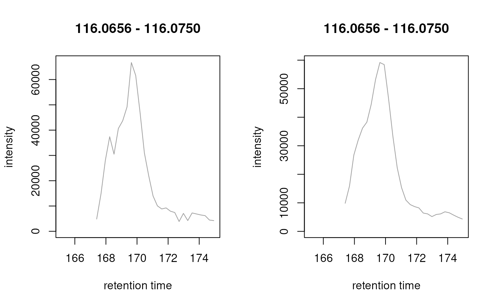

R/functions-MSnExp.R
combineSpectraMovingWindow.RdcombineSpectraMovingWindow combines signal from consecutive spectra within
a file. The resulting MSnExp has the same total number of spectra than the
original object, but with each individual's spectrum information
representing aggregated data from the original spectrum and its neighboring
spectra. This is thus equivalent with a smoothing of the data in retention
time dimension.
Note that the function returns always a MSnExp object, even if x was an
OnDiskMSnExp object.
MSnExp or OnDiskMSnExp object.
integer(1) with the half window size for the moving
window.
function to aggregate the intensity values per m/z
group. Should be a function or the name of a function. The function is
expected to return a numeric(1).
numeric(1) defining the maximal m/z difference below which
mass peaks are considered to represent the same ion/mass peak.
Intensity values for such grouped mass peaks are aggregated. If not
specified this value is estimated from the distribution of differences
of m/z values from the provided spectra (see details).
logical(1) whether definition of the m/z values to be
combined into one m/z is performed on m/z values
(timeDomain = FALSE) or on sqrt(mz) (timeDomain = TRUE).
Profile data from TOF MS instruments should be aggregated based
on the time domain (see details). Note that a pre-defined mzd should
also be estimated on the square root of m/z values if
timeDomain = TRUE.
logical(1) whether m/z values per m/z group should be
aggregated with an intensity-weighted mean. The default is to report
the mean m/z.
numeric(1) to define an m/z relative deviation. Note that if
only ppm should be considered but not mzd, mzd should be set to
0 (i.e. mzd = 0). This parameter is directly passed to
meanMzInts().
parallel processing settings.
MSnExp with the same number of spectra than x.
The method assumes same ions being measured in consecutive scans (i.e. LCMS data) and thus combines their signal which can increase the increase the signal to noise ratio.
Intensities (and m/z values) for signals with the same m/z value in
consecutive scans are aggregated using the intensityFun.
m/z values of intensities from consecutive scans will never be exactly
identical, even if they represent signal from the same ion. The function
determines thus internally a similarity threshold based on differences
between m/z values within and between spectra below which m/z values are
considered to derive from the same ion. For robustness reasons, this
threshold is estimated on the 100 spectra with the largest number of
m/z - intensity pairs (i.e. mass peaks).
See meanMzInts() for details.
Parameter timeDomain: by default, m/z-intensity pairs from consecutive
scans to be aggregated are defined based on the square root of the m/z
values. This is because it is highly likely that in all QTOF MS instruments
data is collected based on a timing circuit (with a certain variance) and
m/z values are later derived based on the relationship t = k * sqrt(m/z).
Differences between individual m/z values will thus be dependent on the
actual m/z value causing both the difference between m/z values and their
scattering being different in the lower and upper m/z range. Determining
m/z values to be combined on the sqrt(mz) reduces this dependency. For
non-QTOF MS data timeDomain = FALSE might be used instead.
The function has to read all data into memory for the spectra combining
and thus the memory requirements of this function are high, possibly
preventing its usage on large experimental data. In these cases it is
suggested to perform the combination on a per-file basis and save the
results using the writeMSData() function afterwards.
meanMzInts() for the function combining spectra provided in
a list.
estimateMzScattering() for a function to estimate m/z value scattering in
consecutive spectra.
library(MSnbase)
library(msdata)
## Read a profile-mode LC-MS data file.
fl <- dir(system.file("sciex", package = "msdata"), full.names = TRUE)[1]
od <- readMSData(fl, mode = "onDisk")
## Subset the object to the retention time range that includes the signal
## for proline. This is done for performance reasons.
rtr <- c(165, 175)
od <- filterRt(od, rtr)
## Combine signal from neighboring spectra.
od_comb <- combineSpectraMovingWindow(od)
## The combined spectra have the same number of spectra, same number of
## mass peaks per spectra, but the signal is larger in the combined object.
length(od)
#> [1] 36
length(od_comb)
#> [1] 36
peaksCount(od)
#> F1.S592 F1.S593 F1.S594 F1.S595 F1.S596 F1.S597 F1.S598 F1.S599 F1.S600 F1.S601
#> 681 745 763 848 713 963 1126 1016 756 796
#> F1.S602 F1.S603 F1.S604 F1.S605 F1.S606 F1.S607 F1.S608 F1.S609 F1.S610 F1.S611
#> 861 830 710 815 739 693 659 734 1054 1246
#> F1.S612 F1.S613 F1.S614 F1.S615 F1.S616 F1.S617 F1.S618 F1.S619 F1.S620 F1.S621
#> 1509 1590 1943 2130 2166 2923 2816 2123 1744 1704
#> F1.S622 F1.S623 F1.S624 F1.S625 F1.S626 F1.S627
#> 2073 2015 1910 1859 1853 1762
peaksCount(od_comb)
#> F1.S592 F1.S593 F1.S594 F1.S595 F1.S596 F1.S597 F1.S598 F1.S599 F1.S600 F1.S601
#> 681 745 763 848 713 963 1126 1016 756 796
#> F1.S602 F1.S603 F1.S604 F1.S605 F1.S606 F1.S607 F1.S608 F1.S609 F1.S610 F1.S611
#> 861 830 710 815 739 693 659 734 1054 1246
#> F1.S612 F1.S613 F1.S614 F1.S615 F1.S616 F1.S617 F1.S618 F1.S619 F1.S620 F1.S621
#> 1509 1590 1943 2130 2166 2923 2816 2123 1744 1704
#> F1.S622 F1.S623 F1.S624 F1.S625 F1.S626 F1.S627
#> 2073 2015 1910 1859 1853 1762
## Comparing the chromatographic signal for proline (m/z ~ 116.0706)
## before and after spectra data combination.
mzr <- c(116.065, 116.075)
chr <- chromatogram(od, rt = rtr, mz = mzr)
chr_comb <- chromatogram(od_comb, rt = rtr, mz = mzr)
par(mfrow = c(1, 2))
plot(chr)
plot(chr_comb)

## Chromatographic data is "smoother" after combining.